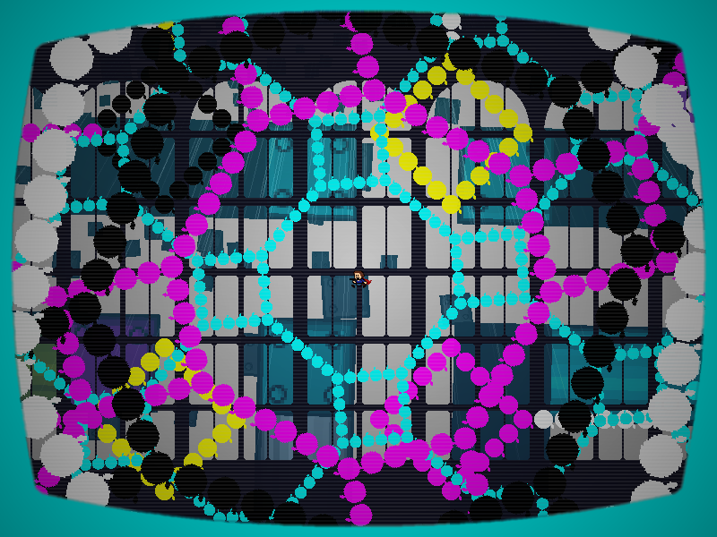
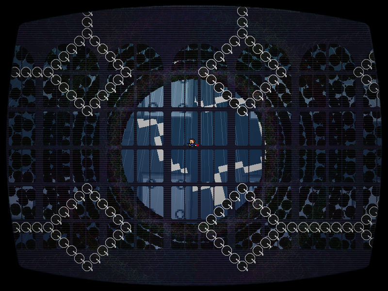
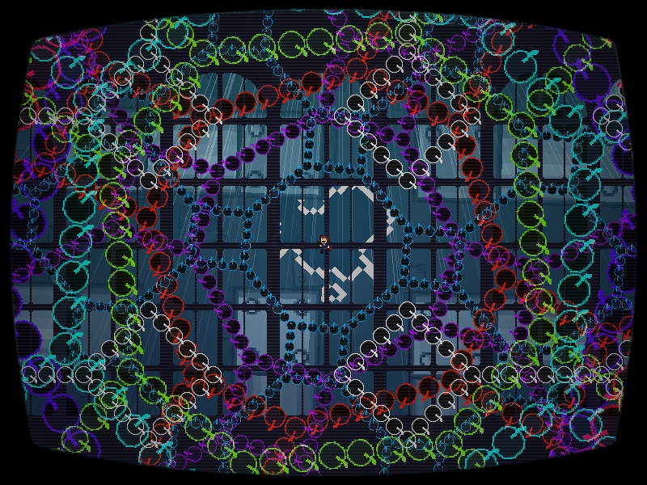

| creator | segment | label | jump |
|---|---|---|---|
| yuzuyu(main) NN(supervise) |
1:37.30~1:40.40 | R*A | infinite |
7-1~7-3の解答に対応する弾幕です。
7-1~7-3において移動した影の背景の迷路上における最終的な到達地点が、迷路状弾幕のどの位置に対応しているかを予測することを目的としています。
1:37.30における影の位置に対応する座標を中心として生成される弾幕（fig.7-4.1.a）に関して、1:38.50において実体化する時点でその中心に十分に近づいている必要があります（fig.7-4.1.b）。

